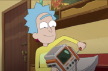

Rick Sanchez

Rick Sanchez , também conhecido como Rick, é um dos dois protagonistas titulares (ao lado de Morty Smith) e um dos
cinco personagens principais da série de comédia de animação adulta de ficção
científica Rick and Morty.
Ele é um cientista megagênio cujo alcoolismo e comportamento imprudente e niilista são fontes de preocupação
para a família de sua "filha", bem como para a segurança de seu filho, Morty. Após o início da série,
as origens misteriosas e a saúde mental de Rick foram grandes fontes de especulação. Com o passar do tempo,
mais foi revelado sobre seu personagem, sua história explicando muito de seu comportamento.
Ao mesmo tempo, Rick cometeu continuamente atos mais hediondos, certificando-o como o anti-herói da série,
beirando o antagonista.
Ele é dublado por Justin Roiland .
Biografia

Enquanto a história de fundo de Rick permaneceu envolta em mistério durante grande parte da série, é claro que ele sempre teve
um talento especial para a ciência e a invenção, sendo capaz de religar e consertar uma televisão por volta dos 12 anos.
O passado de Rick é finalmente mostrado em grande detalhe. A história de fundo "totalmente fabricada" mostrada em
"The Rickshank Rickdemption" foi principalmente baseada na verdade e ainda sugerida em "Rickternal Friendshine of
the Spotless Mort".
Antes do início da série, Rick teve uma infância de classe média bastante normal e desenvolveu um interesse em mexer nas coisas desde tenra idade.
Já adulto, casou-se com uma mulher chamada Diane e tiveram uma filha. Rick eventualmente se tornou um cientista que estava lutando para inventar
o teletransporte. Um dia, ele foi visitado por uma versão alternativa de si mesmo, que lhe ofereceu a capacidade de viajar para diferentes
realidades, mas Rick recusou. Irritado com isso, o outro Rick enviou uma bomba através de um portal, possivelmente tentando matar Rick C-137,
mas matou Diane e Beth. Rick sofreu por um período de tempo desconhecido, antes de inventar sua própria arma de portal e partir em busca de vingança.
Rick passaria as próximas décadas procurando pelo Rick que assassinou sua família. Ele acabou se tornando um traficante de armas, tentando
encontrar peças para um dispositivo para ajudá-lo a rastrear aquele que matou sua família. Rick eventualmente conheceu Birdperson em um festival
e formou uma banda de rock chamada "The Flesh Curtains" junto com Squanchy. Os três eventualmente formaram o núcleo da resistência contra
a Federação Galáctica, culminando na Batalha de Blood Ridge. Depois de vencer a batalha, Rick ofereceu a Birdperson a chance de se juntar a ele
em suas aventuras pelo multiverso, mas Birdperson recusou. Ferido por isso, Rick partiu para continuar sua busca por vingança,
na esperança de encontrar alguém mais agradável para acompanhá-lo em suas aventuras.
Aparência
Rick é um homem hispano-americano alto e velho. Ele tem pernas e braços longos e é muito magro. Ele tem uma pele acinzentada levemente bronzeada
e cabelos cinza-azulados com uma careca na parte de trás da cabeça. Ele tem cabelo azul espetado na cabeça e uma sobrancelha única. Seu rosto
está enrugado, pois ele tem bolsas sob as pálpebras e uma dobra de pressão acima de sua sobrancelha que segue sua posição e linhas de riso em
ambos os lados da boca. Ele usa um jaleco branco com uma camiseta turquesa por baixo. Ele também usa calças marrons, um cinto marrom escuro
com uma fivela amarela e sapatos pretos. Ele é ocasionalmente visto com algum derramamento verde na boca, aparecendo principalmente quando está
bêbado, ou durante uma rara chance de vomitar. Rick fala de uma maneira incoerente e gaguejante que muitas vezes é interrompida por arrotos
e engasgos, geralmente por estar bêbado ou chapado. Interessantemente, enquanto ele permanece idêntico ao longo da série, Rick ocupou o corpo
de um de seus eus alternativos, tendo assumido sua mente durante a estréia da 3ª temporada. Desde então, este corpo foi destruído e agora ele
habita um clone do corpo deste Rick.
Rick também ostenta uma série de aprimoramentos cibernéticos, que ele ocasionalmente usa durante situações perigosas. A partir desses momentos,
pode-se razoavelmente supor que ambos os braços e pelo menos um de seus olhos são agora completamente cibernéticos.
Abuso de Substâncias

Originalmente, o consumo de álcool de Rick é apresentado mais de um ponto de vista cômico ao longo da série,
mas no final da 1ª temporada "Ricksy Business", Bird Person afirma que Rick está com "grande dor"
(citando seu bordão "wubba lubba dub dub" como significando "Estou com muita dor. Por favor, me ajude." na
linguagem de Bird Person), e que ele usa drogas e álcool para se anestesiar. Isso provavelmente se deve à sua
inteligência genial, niilismo e ao efeito traumatizante que suas contínuas aventuras podem ter sobre ele,
no passado e no presente (em "Rick Potion No. 9", Rick explica que o melhor método de como lidar com eventos e resultados horríveis é
"não pensar nisso"). Dentro, é mostrado que Rick começou a beber grandes quantidades de álcool para lidar com a morte de sua esposa e filha,
bem como seu fracasso em se vingar de seu assassino.